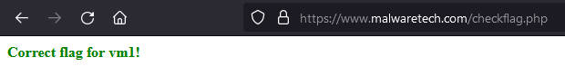

MalwareTech Challenge #5 Write-Ups
[ De-virtualization ]
Sometimes malware attempts to hinder reverse engineering by implementing a virtual machine which runs custom bytecode. These challenges are designed to test your ability to reverse engineer & manipulate custom bytecode.
VM1
Description:
vm1.exe implements a simple 8-bit virtual machine (VM) to try and stop reverse engineers from retrieving the flag. The VM’s RAM contains the encrypted flag and some bytecode to decrypt it. Can you figure out how the VM works and write your own to decrypt the flag? A copy of the VM’s RAM has been provided in ram.bin (this data is identical to the ram content of the malware’s VM before execution and contains both the custom assembly code and encrypted flag).
Rules & Information:
- You are not require to run vm1.exe, this challenge is static analysis only.
- Do not use a debugger or dumper to retrieve the decrypted flag from memory, this is cheating.
- Analysis can be done using the free version of IDA Pro (you don’t need the debugger).
Hi friend, in this challenge we are given 2 files, vm1.exe and ram.bin. let’s start with opened ram.bin in hex editor:
As stated in the description above, this ram.bin is a copy of the VM’s RAM, so for now it is impossible to understand it. Let’s move to vm1.exe, detect it easy result:
It’s using C/C++, so i opened Ghidra to disassemble and decompile it. Let’s start by analyzing the entrypoint function using Ghidra decompiler:
void entry(void)
{
HANDLE hHeap;
char *lpText;
DWORD dwFlags;
SIZE_T dwBytes;
MD5 local_94 [144];
MD5::MD5(local_94);
dwBytes = 0x1fb;
dwFlags = 0;
hHeap = GetProcessHeap();
DAT_0040423c = (char *)HeapAlloc(hHeap,dwFlags,dwBytes);
memcpy(DAT_0040423c,&DAT_00404040,0x1fb);
FUN_004022e0();
lpText = MD5::digestString(local_94,DAT_0040423c);
MessageBoxA((HWND)0x0,lpText,"We\'ve been compromised!",0x30);
/* WARNING: Subroutine does not return */
ExitProcess(0);
}
An address allocated heap is stored in DAT_0040423C, 0x1FB bytes of data from DAT_00404040 are copied into it, then that data will be hashed and the hash will be displayed in a messagebox. Let’s see what data is in DAT_00404040:
And it turns out that this data is identical to ram.bin, so let’s name it vm_ram.
This vm_ram is copied in [ DAT_0040423C ] and there is no processing of this data in this entrypoint function, so it might be done in another function.
Let’s analyze FUN_004022e0 called in this entrypoint function:
void FUN_004022e0(void)
{
byte bVar1;
uint uVar2;
byte bVar3;
byte local_5;
local_5 = 0;
do {
uVar2 = (uint)local_5;
bVar1 = local_5 + 1;
bVar3 = local_5 + 2;
local_5 = local_5 + 3;
uVar2 = FUN_00402270((uint)*(byte *)(DAT_0040423c + 0xff + uVar2),(uint)*(byte *)(DAT_0040423c + 0xff + (uint)bVar1),*(undefined *)(DAT_0040423c + 0xff + (uint)bVar3));
} while ((uVar2 & 0xff) != 0);
return;
}
Ok, there is a loop, and FUN_00402270 is called in it, remember that DAT_0040423c is a pointer to vm_ram data, and where that data is accessed as 3 parameters for FUN_00402270.
From Ghidra decompiler result above, the first and second parameters access the vm_ram data in the size of a byte.
*(byte *)(DAT_0040423c + 0xff + uVar2) // first parameter
*(byte *)(DAT_0040423c + 0xff + (uint)bVar1) // second parameter
But for the third parameter, accessed size is undefined.
*(undefined *)(DAT_0040423c + 0xff + (uint)bVar3)
Let’s see the assembly code for the above pseudo-code:
MOVZX EAX, byte ptr [EBP + local_5]
MOV ECX, dword ptr [DAT_0040423c]
MOVZX EDX, byte ptr [ECX + EAX*0x1 + 0xff]
In the third line, the accessed size for the third parameter is a byte. So all three parameters both access vm_ram with a size of a byte.
// first loop
*(byte *)(DAT_0040423c + 0xff + 0) // 1st parameter
*(byte *)(DAT_0040423c + 0xff + 1) // 2nd parameter
*(byte *)(DAT_0040423c + 0xff + 2) // 3rd parameter
// second loop
*(byte *)(DAT_0040423c + 0xff + 3) // 1st parameter
*(byte *)(DAT_0040423c + 0xff + 4) // 2nd parameter
*(byte *)(DAT_0040423c + 0xff + 5) // 3rd parameter
// and so on
So here in the do-while loop, FUN_00402270 is called and will read **vm_ram data per 3 bytes sequentially starting at offset 0xff, and the loop will breaks when FUN_00402270 returns zero.
Let’s move to analyze FUN_00402270:
undefined4 FUN_00402270(int param_1,int param_2,undefined param_3)
{
if (param_1 == 1) {
*(undefined *)(DAT_0040423c + param_2) = param_3;
}
else if (param_1 == 2) {
param_1 = DAT_0040423c + param_2;
DAT_00404240 = *(byte *)param_1;
}
else {
if (param_1 != 3) {
return param_1 & 0xffffff00;
}
param_1 = DAT_0040423c + param_2;
*(byte *)(DAT_0040423c + param_2) = *(byte *)param_1 ^ DAT_00404240;
}
return CONCAT31((int3)((uint)param_1 >> 8),1);
}
Because there are no other functions called from this function, this is the last function that needs to be analyzed.
This function performs 3 tasks based on the parameters passed:
// task #1
*(undefined *)(DAT_0040423c + param_2) = param_3;
// task #2
param_1 = DAT_0040423c + param_2;
DAT_00404240 = *(byte *)param_1;
// task #3
param_1 = DAT_0040423c + param_2;
*(byte *)(DAT_0040423c + param_2) = *(byte *)param_1 ^ DAT_00404240;
And because this function parameter is from vm_ram, i guessed that this function is where VM’s custom byte code is executed.
Based on this function, i’ll write a python script to emulate the VM, but before that, there is an undefined access size in task #1, and this must be made clear first to emulate with great precision. To do that, let’s see the assembly code:
MOV ECX, dword ptr [DAT_0040423c]
ADD ECX, dword ptr [EBP + param_2]
MOV DL, byte_ptr [EBP + param3]
MOV byte ptr [ECX], DL
Ok, in the fourth line, the accessed size in task #1 is in the size of a byte, and now here’s my python script:
file1 = open("ram.bin", "rb")
data = bytearray(file1.read())
file1.close()
i = 0
while True:
p1 = data[i + 0xff]
p2 = data[i + 1 + 0xff]
p3 = data[i + 2 + 0xff]
if p1 == 1:
data[p2] = p3
elif p1 == 2:
p4 = data[p2]
else:
if p1 != 3:
break
data[p2] = data[p2] ^ p4
i = i + 3
file2 = open("result.bin", "wb")
file2.write(data)
print("done!")
Run the script then opened result.bin in hex editors:
Got an interesting string here that has the flag’s format, and i checked it:

Yep, FLAG{VMS-ARE-FOR-MALWARE} is the flag.
Challenge source: https://www.malwaretech.com/challenges/windows-reversing/vm1